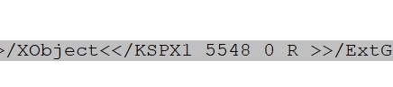
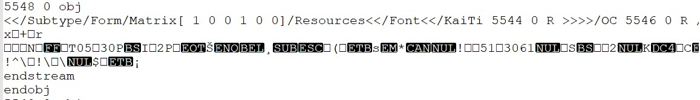

记一次pdf去水印的流程
在网上找到了一份学习资料,但是上面的水印十分影响阅读,我想把水印去掉
首先想到的就是python有没有什么库可以操作pdf
经过搜索发现有人用pypdf2去水印,并且贴上了代码:链接
试着运行了下这份代码,没有解决我的问题
在查看了pypdf2官方文档,debug无果之后,尝试打印了第一页所有的格式,发现只有如下几种:
[b’q’, b’BT’, b’Tf’, b’Tc’, b’Tm’, b’g’, b’G’, b’TJ’, b’ET’, b’Q’, b’Tr’, b’w’, b’cm’, b’re’, b’f*’, b’BDC’, b’gs’, b’Do’, b’EMC’]
尝试依次去除一种格式,观察效果:
Tm 格式全去掉为空 Tf 格式去掉为乱码 g 格式全去掉出现小黑快 cm 格式去掉水印出现倾斜 gs 格式去掉水印变黑了 Do 格式去掉水印消失了所以说,只要把每一页的Do格式的文本替换为空,就可以达到去水印的目的
但是我觉着到目前为止的东西都太体力了,我想要一种快捷的做法
又去网上找到了一篇介绍pdf文件格式的文章, 链接
在程序中打印了格式为Do的数据,输出如下
[‘/KSPX1’]
用文本编辑器打开pdf文件并搜索,得到这样的内容

将
<</KSPX1 5548 0 R >>删除可以删除一页的水印而由前面的文章可以知道,这个是一个间接引用,将关键字改为5548 0 obj可以搜索到

将这一段删掉即可去除整个pdf的水印
后记
- 如果一页的水印只有一个的话,可以尝试计算出对应格式出现的次数,优先删除出现次数为1的格式
- 到现在也不明白所谓的格式是什么
原文作者: zhanzhi
原文链接: http://zhanzhl.github.io/2020/08/20/pdf-qu-shui-yin/
版权声明: 随意